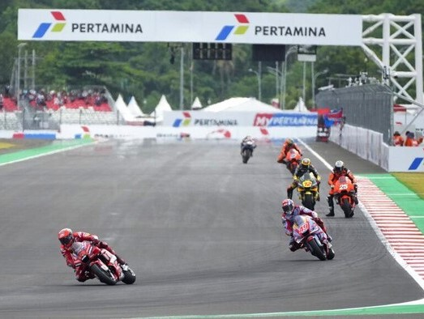

|
Minggu, 20 Maret 2022 05:53 WIB  Mandalika - Gelaran MotoGP Mandalika 2022 telah dimulai. Namun 'kerikil' dalam perhelatan MotoGP Mandalika langsung bermunculan, mulai penipuan perjanjian sewa mobil hingga calo tiket yang berkeliaran. Penipuan Sewa Mobil Bikin Rugi Rp 600 Juta Salah satu agen perjalanan asal Malang, Jawa Timur (Jatim), mengaku kena tipu perjanjian sewa 65 mobil untuk kebutuhan MotoGP Mandalika 2022. Mereka mengklaim merugi hingga Rp 600 juta. Agen perjalanan dari CV Hafiz Jaya Tour, Usma Hadi, mengatakan nilai kerugian itu muncul dari perjanjian dengan seorang pria berinisial DD, anggota Asosiasi Perusahaan Penjual Tiket Penerbangan Indonesia (Astindo) NTB. "Jadi awalnya, jauh sebelum perhelatan MotoGP Mandalika berlangsung, pihak kami dihubungi DD dengan mengatasnamakan Astindo NTB," kata Usma seperti dilansir dari Antara, Sabtu (19/3/2022) Dia mengatakan saat itu DD memesan 65 unit kendaraan, di antaranya bermerek Pajero Sport, Fortuner, Innova Reborn, dan HiAce. Seluruh unit dipesan dengan alasan untuk mendukung transportasi di ajang MotoGP. Kemudian, dari kesepakatannya, DD menjanjikan akan membayar uang muka setengah dari nilai penyewaan 65 kendaraan roda empat. Namun, syaratnya, seluruh unit harus tiba di Lombok. "Jadi kami datang rombongan dari Malang. Tetapi, setelah sampai sini, DP (down payment) yang dijanjikan itu tidak ada sampai sekarang. Ini sudah tiga hari kami di sini," ujarnya pula. Akibatnya, puluhan unit kendaraan asal Malang itu kini menganggur di halaman kantor Dinas Perhubungan (Dishub) Provinsi NTB. Usma bersama pihak agen perjalanan berencana menempuh jalur hukum dengan melaporkan persoalan ini ke pihak kepolisian. "Nantinya kami juga mau buat izin demonstrasi ke kantor Gubernur NTB biar ada perhatian, kami di sini terkatung-katung," ujar dia. Sekjen Astindo NTB Abdul Haris membenarkan adanya kejadian tersebut. Namun Haris menegaskan pemesanan ini bukan atas nama Astindo NTB. Dia mengatakan pemesanan itu dilakukan secara personal oleh DD, anggotanya yang menjadi agen perjalanan di Lombok. Pemesanan ini pun dilakukan DD tanpa sepengetahuan dirinya maupun Ketua Astindo NTB. "Jadi sistem transaksi ini tanpa ada pemberitahuan ke kami, dan bukan mengatasnamakan Asosiasi, tetapi atas nama pribadi mereka masing-masing, jadi tidak ada melibatkan kami," ujar Haris. Ia pun memastikan dampak dari persoalan ini, anggota Astindo NTB turut menanggung beban pembayaran uang muka. Perihal alasan anggotanya tersebut tidak memenuhi perjanjian ini, Haris mengaku belum mendapat kabar lebih lanjut dari DD. Calo Tiket BerkeliaranTiket MotoGP Mandalika sudah habis terjual. Namun sejumlah calo yang menjual tiket MotoGP masih berkeliaran. detikcom sempat didatangi calo menawarkan tiket Zone E. Terlihat calo itu mengeluarkan lima lembar tiket dari tasnya. Namun, saat akan ditanya lebih jauh, calo menghindar karena dia sadar menawarkan ke awak media. "Mas butuh tiket? Ini saya ada, murah saja, Mas. Mau berapa?" ujar salah satu calo saat di kawasan Parkir Barat, Mandalika, Lombok, Sabtu (19/3). "Ayo... ayo... yang tiketnya cancel, boleh," tambahnya. Salah satu pengunjung yang tak ingin disebutkan namanya mengatakan sempat ditawari calo tiket Zona B untuk Minggu (20/3) seharga Rp 2 juta. Ia mengatakan harga tersebut terlalu mahal. Dirinya pun mengurungkan niat membeli tiket. "Saya ditawari tiket Zona B seharga Rp 2 juta. Dia (calo) memastikan tiket tersebut asli dan dapat digunakan. Jaminan bisa foto muka dan KTP," ujarnya saat ditemui di Parkir Barat Mandalika, Lombok. Menurutnya, adanya calo ini meresahkan. Ia meminta aparat berwajib menindaklanjuti agar tak ada masyarakat lain yang dirugikan. Polisi Interogasi Calo TiketKabid Humas Polda Nusa Tenggara Barat (NTB) Kombes Artanto menjelaskan calo tiket yang berkeliaran di seputar Mandalika diinterogasi polisi. Pasalnya, informasi dari pihak penjual resmi, tiket nonton MotoGP Mandalika sudah habis terjual. "Terhadap calo tiket, tim Puma Mobile Gakkum Polda NTB melakukan pemantauan dan pendataan terhadap calo-calo penjual tiket di sekitar Masjid Nurul Bilad Mandalika, Lombok Tengah," ujar Artanto kepada wartawan, Sabtu (19/3). Setelah didata, calo tiket tersebut kemudian diinterogasi polisi. Calo-calo itu mengaku mendapat tiket dari penonton yang sudah membeli tiket, tapi tidak jadi menonton. "Setelah diinterogasi, mereka mengaku mendapatkan tiket dari penonton yang sudah membeli tiket tapi batal untuk menonton, lalu para calo membeli tiket tersebut dan menjualnya kembali," jelasnya. Setelah didata dan diinterogasi, calo-calo tersebut kemudian diberi arahan dan pembinaan. Mereka ditegaskan untuk tidak menjual tiket palsu sehingga merugikan banyak pihak dan merusak nama Lombok. "Calo-calo tersebut kita data, lalu kita berikan arahan," imbuh Artanto. |